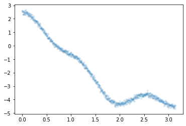

import numpy as np
import tensorflow as tf
import tensorflow.experimental.numpy as tnp중간고사예상문제-4월 28일
빅데이터분석특강
- toc:false
- branch: master
- badges: true
- comments: true
- author: 심재인
중간고사 예상문제
import matplotlib.pyplot as plttnp.experimental_enable_numpy_behavior()1. 경사하강법과 tf.GradientTape()의 사용방법 (30점)
(1) 아래는 \(X_i \overset{iid}{\sim} N(3,2^2)\) 를 생성하는 코드이다. (10점)
tf.random.set_seed(43052)
x= tnp.random.randn(10000)*2+3
x2022-04-25 18:15:05.074138: I tensorflow/stream_executor/cuda/cuda_gpu_executor.cc:939] successful NUMA node read from SysFS had negative value (-1), but there must be at least one NUMA node, so returning NUMA node zero<tf.Tensor: shape=(10000,), dtype=float64, numpy=
array([ 4.12539849, 5.46696729, 5.27243374, ..., 2.89712332,
5.01072291, -1.13050477])>함수 \(L(\mu,\sigma)\)을 최대화하는 \((\mu,\sigma)\)를 tf.GradeintTape()를 활용하여 추정하라. (경사하강법 혹은 경사상승법을 사용하고 \(\mu\)의 초기값은 2로 \(\sigma\)의 초기값은 3으로 설정할 것)
\[L(\mu,\sigma)=\prod_{i=1}^{n}f(x_i), \quad f(x_i)=\frac{1}{\sqrt{2\pi}\sigma}e^{-\frac{1}{2}(\frac{x_i-\mu}{\sigma})^2}\]
hint: \(L(\mu,\sigma)\)를 최대화하는 \((\mu,\sigma)\)는 \(\log L(\mu,\sigma)\)를 역시 최대화한다는 사실을 이용할 것.
hint: \(\mu\)의 참값은 3, \(\sigma\)의 참값은 2이다. (따라서 \(\mu\)와 \(\sigma\)는 각각 2와 3근처로 추정되어야 한다.)
- 풀이
N = 10000y_true=(x-3)**2/2**2epsilon = tnp.random.randn(N)*0.5
y=(x-3)**2/2**2+epsilonx.shape, y.shape(TensorShape([10000]), TensorShape([10000]))beta = tf.Variable(2.0)
alpha = tf.Variable(3.0)for epoc in range(1000):
with tf.GradientTape() as tape:
yhat = (x-beta)**2/(alpha**2)
loss = tf.reduce_sum((y-yhat)**2)/N
slope0,slope1 = tape.gradient(loss,[beta,alpha])
beta.assign_sub(alpha * slope0)
alpha.assign_sub(alpha * slope1) beta, alpha(<tf.Variable 'Variable:0' shape=() dtype=float32, numpy=161.78185>,
<tf.Variable 'Variable:0' shape=() dtype=float32, numpy=159.62784>)yhat=(x-beta)**2/(alpha**2)plt.plot(x,y,'.')
plt.plot(x,yhat,'r.')
(2)
(3)
2. 회귀분석의 이론적해와 tf.keras.optimizer 이용방법 (20점)
아래와 같은 선형모형을 고려하자.
\[y_i = \beta_0 + \beta_1 x_i +\epsilon_i.\]
이때 오차항은 정규분포로 가정한다. 즉 \(\epsilon_i \overset{iid}{\sim} N(0,\sigma^2)\)라고 가정한다.
관측데이터가 아래와 같을때 아래의 물음에 답하라.
x= tnp.array([20.1, 22.2, 22.7, 23.3, 24.4, 25.1, 26.2, 27.3, 28.4, 30.4])
y= tnp.array([55.4183651 , 58.19427589, 61.23082496, 62.31255873, 63.1070028 ,
63.69569103, 67.24704918, 71.43650092, 73.10130336, 77.84988286])
# X= tnp.array([[1.0, 20.1], [1.0, 22.2], [1.0, 22.7], [1.0, 23.3], [1.0, 24.4],
# [1.0, 25.1], [1.0, 26.2], [1.0, 27.3], [1.0, 28.4], [1.0, 30.4]])(1) MSE loss를 최소화 하는 \(\beta_0,\beta_1\)의 해석해를 구하라.
-풀이
N = 10y = y.reshape(N,1)X = tf.stack([tf.ones(N,dtype='float64'),x],axis=1)y=y.reshape(N,1)
x=x.reshape(N,1)
y.shape, X.shape(TensorShape([10, 1]), TensorShape([10, 2]))tf.linalg.inv(X.T @ X) @ X.T @ y<tf.Tensor: shape=(2, 1), dtype=float64, numpy=
array([[9.94457323],
[2.21570461]])>y_hat=9.94457323+2.21570461*xplt.plot(x,y,'.')
plt.plot(x,y_hat,'r--')
(2) 경사하강법과 MSE loss의 도함수를 이용하여 \(\beta_0,\beta_1\)을 추정하라.
주의 tf.GradeintTape()를 이용하지 말고 MSE loss의 해석적 도함수를 사용할 것.
-풀이
N = 10y=y.reshape(N,1)
X=tf.stack([tf.ones(N,dtype=tf.float64),x],axis=1)
y.shape,X.shapeInvalidArgumentError: Shapes of all inputs must match: values[0].shape = [10] != values[1].shape = [10,1] [Op:Pack] name: stacky=y.reshape(N,1)
X.shape, y.shape(TensorShape([10, 2]), TensorShape([10, 1]))beta_hat = tnp.array([9,2]).reshape(2,1)
beta_hat<tf.Tensor: shape=(2, 1), dtype=int64, numpy=
array([[9],
[2]])>alpha = 0.001for epoc in range(1000):
slope = (-2*X.T @ y + 2*X.T@ X @ beta_hat)/N
beta_hat = beta_hat - alpha * slopebeta_hat<tf.Tensor: shape=(2, 1), dtype=float64, numpy=
array([[9.03545357],
[2.25155218]])>y_hat=9.03545357+2.25155218*xplt.plot(x,y,'.')
plt.plot(x,y_hat,'r--')(3) tf.keras.optimizers의 apply_gradients()를 이용하여 \(\beta_0,\beta_1\)을 추정하라.
-풀이
opt.apply_gradients([(slope,beta_hat)])
betaNameError: name 'opt' is not definedX.shape,y.shape(TensorShape([10, 2]), TensorShape([10, 1]))beta_hat = tf.Variable(tnp.array([9,2],dtype='float64').reshape(2,1))
beta_hat<tf.Variable 'Variable:0' shape=(2, 1) dtype=float64, numpy=
array([[9.],
[2.]])>alpha=0.001
opt = tf.keras.optimizers.SGD(alpha)NameError: name 'tf' is not definedfor epoc in range(1000):
with tf.GradientTape() as tape:
yhat = X@beta_hat
loss = (y-yhat).T @ (y-yhat) / N
slope = tape.gradient(loss,beta_hat)
opt.apply_gradients( [(slope,beta_hat)] )beta_hat<tf.Variable 'Variable:0' shape=(2, 1) dtype=float64, numpy=
array([[9.03545358],
[2.25155218]])>y_hat=9.03545358+2.25155218*xplt.plot(x,y,'.')
plt.plot(x,y_hat,'r--')
(4) tf.keras.optimizers의 minimize()를 이용하여 \(\beta_0,\beta_1\)을 추정하라.
- 풀이
mse_fn = tf.losses.MeanSquaredError()
mse_fn(y,yhat)<tf.Tensor: shape=(), dtype=float64, numpy=0.9609637260437012>mseloss_fn=tf.losses.MeanSquaredError()y=y.reshape(N,1)
X.shape,y.shape(TensorShape([10, 2]), TensorShape([10, 1]))beta_hat = tf.Variable(tnp.array([9,2],dtype='float64').reshape(2,1))
beta_hat<tf.Variable 'Variable:0' shape=(2, 1) dtype=float64, numpy=
array([[9.],
[2.]])>alpha=0.0015
opt = tf.keras.optimizers.SGD(alpha) mseloss_fn(y.reshape(-1),yhat.reshape(-1))<tf.Tensor: shape=(), dtype=float64, numpy=0.960963785648346>def loss_fn():
yhat= X@beta_hat
loss = mseloss_fn(y.reshape(-1),yhat.reshape(-1))
return lossfor epoc in range(1000):
opt.minimize(loss_fn,beta_hat)beta_hat<tf.Variable 'Variable:0' shape=(2, 1) dtype=float64, numpy=
array([[9.04793931],
[2.25105986]])>y_hat=9.03545358+2.25155218*xplt.plot(x,y,'.')
plt.plot(x,y_hat,'r--')
hint1 alpha=0.0015로 설정할 것
hint2 epoc은 10000번정도 반복실행하며 적당한 횟수를 찾을 것
hint3 (1)의 최적값에 반드시 정확히 수렴시킬 필요는 없음 (너무 많은 에폭이 소모됨)
hint4 초기값으로 [5,10] 정도 이용할 것
3. keras를 이용한 풀이 (30점)
(1) 아래와 같은 모형을 고려하자.
\[y_i= \beta_0 + \sum_{k=1}^{5} \beta_k \cos(k t_i)+\epsilon_i, \quad i=0,1,\dots, 999\]
여기에서 \(t_i=\frac{2\pi i}{1000}\) 이다. 그리고 \(\epsilon_i \sim i.i.d~ N(0,\sigma^2)\), 즉 서로 독립인 표준정규분포에서 추출된 샘플이다. 위의 모형에서 아래와 같은 데이터를 관측했다고 가정하자.
np.random.seed(43052)
t= np.array(range(1000))* np.pi/1000
y = -2+ 3*np.cos(t) + 1*np.cos(2*t) + 0.5*np.cos(5*t) + np.random.randn(1000)*0.1
plt.plot(t,y,'.',alpha=0.1)
tf.keras를 이용하여 \(\beta_0,\dots,\beta_5\)를 추정하라. (\(\beta_0,\dots,\beta_5\)의 참값은 각각 -2,3,1,0,0,0.5 이다)
- 6주차 keras 예제3번 활용
X = np.stack([np.ones(1000),np.cos(1*t),np.cos(2*t),np.cos(3*t),np.cos(4*t),np.cos(5*t)],axis=1)
y = y.reshape(1000,1)net = tf.keras.Sequential()
net.add(tf.keras.layers.Dense(1,use_bias=False))
net.compile(tf.optimizers.SGD(0.1), loss='mse')
net.fit(X,y,epochs=30, batch_size=N)Epoch 1/30
100/100 [==============================] - 0s 711us/step - loss: 0.4868
Epoch 2/30
100/100 [==============================] - 0s 852us/step - loss: 0.0094
Epoch 3/30
100/100 [==============================] - 0s 789us/step - loss: 0.0095
Epoch 4/30
100/100 [==============================] - 0s 747us/step - loss: 0.0094
Epoch 5/30
100/100 [==============================] - 0s 744us/step - loss: 0.0095
Epoch 6/30
100/100 [==============================] - 0s 713us/step - loss: 0.0094
Epoch 7/30
100/100 [==============================] - 0s 721us/step - loss: 0.0092
Epoch 8/30
100/100 [==============================] - 0s 788us/step - loss: 0.0093
Epoch 9/30
100/100 [==============================] - 0s 759us/step - loss: 0.0093
Epoch 10/30
100/100 [==============================] - 0s 729us/step - loss: 0.0095
Epoch 11/30
100/100 [==============================] - 0s 795us/step - loss: 0.0093
Epoch 12/30
100/100 [==============================] - 0s 742us/step - loss: 0.0093
Epoch 13/30
100/100 [==============================] - 0s 725us/step - loss: 0.0093
Epoch 14/30
100/100 [==============================] - 0s 761us/step - loss: 0.0095
Epoch 15/30
100/100 [==============================] - 0s 690us/step - loss: 0.0094
Epoch 16/30
100/100 [==============================] - 0s 699us/step - loss: 0.0093
Epoch 17/30
100/100 [==============================] - 0s 598us/step - loss: 0.0095
Epoch 18/30
100/100 [==============================] - 0s 612us/step - loss: 0.0094
Epoch 19/30
100/100 [==============================] - 0s 696us/step - loss: 0.0095
Epoch 20/30
100/100 [==============================] - 0s 661us/step - loss: 0.0095
Epoch 21/30
100/100 [==============================] - 0s 687us/step - loss: 0.0092
Epoch 22/30
100/100 [==============================] - 0s 671us/step - loss: 0.0094
Epoch 23/30
100/100 [==============================] - 0s 691us/step - loss: 0.0095
Epoch 24/30
100/100 [==============================] - 0s 706us/step - loss: 0.0094
Epoch 25/30
100/100 [==============================] - 0s 695us/step - loss: 0.0094
Epoch 26/30
100/100 [==============================] - 0s 706us/step - loss: 0.0095
Epoch 27/30
100/100 [==============================] - 0s 683us/step - loss: 0.0095
Epoch 28/30
100/100 [==============================] - 0s 743us/step - loss: 0.0094
Epoch 29/30
100/100 [==============================] - 0s 800us/step - loss: 0.0094
Epoch 30/30
100/100 [==============================] - 0s 797us/step - loss: 0.0095<keras.callbacks.History at 0x7f5b7c2e5e10>net.weights[<tf.Variable 'dense/kernel:0' shape=(6, 1) dtype=float32, numpy=
array([[-1.9899189e+00],
[ 3.0180848e+00],
[ 1.0091044e+00],
[-1.8584070e-03],
[-4.8465207e-03],
[ 4.9381223e-01]], dtype=float32)>](2) 아래와 같은 모형을 고려하자.
\[y_i \sim Ber(\pi_i), ~ \text{where} ~ \pi_i=\frac{\exp(w_0+w_1x_i)}{1+\exp(w_0+w_1x_i)}\]
위의 모형에서 관측한 데이터는 아래와 같다.
tf.random.set_seed(43052)
x = tnp.linspace(-1,1,2000)
y = tf.constant(np.random.binomial(1, tf.nn.sigmoid(-1+5*x)),dtype=tf.float64)
plt.plot(x,y,'.',alpha=0.05)tf.keras를 이용하여 \(w_0,w_1\)을 추정하라. (참고: \(w_0, w_1\)에 대한 참값은 -1과 5이다.)
- 7주차 Logistic regression 예제 참고
x.shape, y.shape(TensorShape([2000]), TensorShape([2000]))x=x.reshape(2000,1)
x.shape, y.shape(TensorShape([2000, 1]), TensorShape([2000]))net = tf.keras.Sequential()
net.add(tf.keras.layers.Dense(1,activation='sigmoid'))
bceloss_fn = lambda y,yhat: -tf.reduce_mean(y*tnp.log(yhat) + (1-y)*tnp.log(1-yhat))
net.compile(loss=bceloss_fn, optimizer=tf.optimizers.SGD(0.1))
net.fit(x,y,epochs=10000,verbose=0,batch_size=2000)<keras.callbacks.History at 0x7f5d075eed10>net.weights[<tf.Variable 'dense_1/kernel:0' shape=(1, 1) dtype=float32, numpy=array([[5.09306]], dtype=float32)>,
<tf.Variable 'dense_1/bias:0' shape=(1,) dtype=float32, numpy=array([-1.0963831], dtype=float32)>]plt.plot(x,y,'.',alpha=0.1)
plt.plot(x,net(x),'--b')
4. Piecewise-linear regression (15점)
5. 다음을 잘 읽고 참과 거짓을 판단하라. (5점)
(1) 적절한 학습률이 선택된다면, 경사하강법은 손실함수가 convex일때 언제 전역최소해를 찾을 수 있다.
(2)
(3)
(4)
(5)
some notes
- 용어를 모르겠는 분은 질문하시기 바랍니다.
- 풀다가 에러나는 코드 질문하면 에러 수정해드립니다.